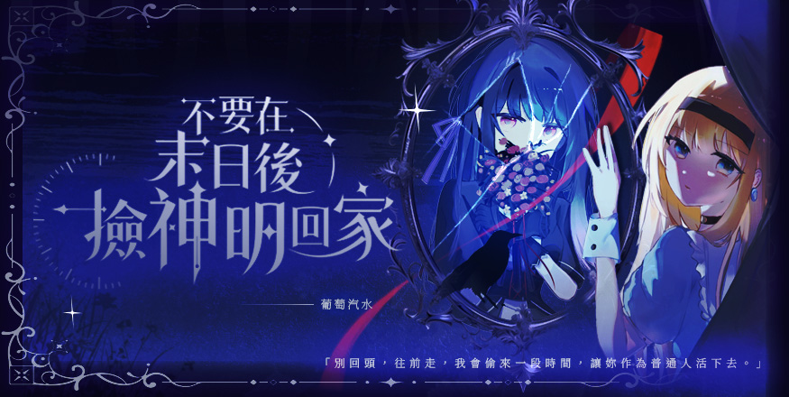

ORIGINAL CHARACTERS & WORLD葡萄汽水 ✧ 不要在末日後撿神明回家
故事起源於深冬中三月的微光，如曇花乍現，轉瞬即逝。
此後，為了赴不知歸期的相逢，她將餘生擱淺於無垠的雪地。
BEFORE THE STORY
傳說在災厄摧毀世界後，出現了神明提供人類聖痕力，給予力量讓人類重建家園。
但事實⋯⋯似乎真的是如此嗎？
WELCOME TO THEIR WORLD
每個角色，都有自己的小宇宙。
米菈為了補助金進入聖格里芬學院。
從第一小隊的日常，認識他們的個性與世界。
角色圖鑑
先從米菈與第一小隊開始認識。
走進角色檔案 ↗02 / CONNECTIONS人物關係圖
以米菈為中心，看看他們如何相遇。
探索彼此的連結 ↗03 / WORLD世界觀
學院、聖痕與末日後的生活。
進入世界觀 ↗04 / READ THE STORY閱讀小說
在喜歡的平台，翻開米菈的故事。
前往閱讀平台 ↗